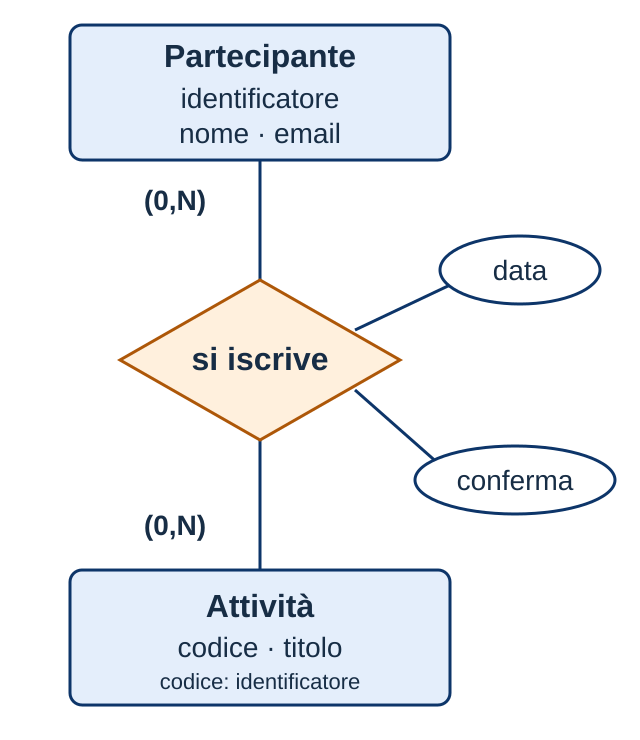

Leggere minimo e massimo
Spiegare quante iscrizioni sono ammesse per un singolo partecipante e per una singola attività.
Lezione 8 · M1 · Informatica · Classi quinte
Cardinalità e regole del modello: dal disegno alle possibilità ammesse per ogni partecipante e ogni attività.
Da dove partiamo
Nella Lezione 7 hai distinto Partecipante e Attività e li hai collegati con l’associazione «si iscrive». La data descrive la singola iscrizione. Nella variante hai aggiunto anche la conferma della partecipazione.
Riprendi il tuo schema: una persona può essere registrata senza scegliere attività? Può sceglierne due? Un’attività può non avere iscritti? Le risposte erano già nei requisiti. Ora impariamo a scriverle sul collegamento, perché un’altra persona possa leggere il modello senza spiegazioni aggiuntive.
Al termine
Spiegare quante iscrizioni sono ammesse per un singolo partecipante e per una singola attività.
Controllare il modello con dati inventati e aggiornarlo quando cambia un requisito.
A · Ragiona su un elemento alla volta
Le regole iniziali restano quelle della lezione precedente:
Considera soltanto P01. Sono ammesse zero iscrizioni? Una? Due ad attività diverse? Poi cambia punto di vista: considera soltanto robotica e fai le stesse domande sul numero dei suoi partecipanti.
Attenzione al campione: se oggi P02 ha scelto soltanto robotica, questo non dimostra che possa scegliere al massimo un’attività. Il limite dipende dai requisiti, non dal numero di esempi che hai davanti.
B · Dai un nome alla regola
La cardinalità indica a quante occorrenze di un’associazione può partecipare un singolo elemento di un’entità. Qui un’occorrenza è una specifica iscrizione, per esempio quella di P01 a robotica.
La scriviamo come una coppia (minimo,massimo). Il primo valore indica il numero più basso ammesso; il secondo quello più alto ammesso.
(0,N) si legge «da zero a molti»: sono ammessi zero, uno o più legami. N esprime una possibilità; non obbliga ogni partecipante ad avere molte iscrizioni.
(1,N) richiede invece almeno un legame e ne consente più di uno. Un massimo pari a 1 vieterebbe il secondo legame: per esempio (0,1) significherebbe «nessuno oppure uno solo».
Controllo: se il requisito dice «può non essere ancora iscritto», quale valore deve comparire come minimo?
C · Leggi lo schema
Convenzione usata in questa lezione: la coppia scritta vicino a un’entità descrive la partecipazione di un suo singolo elemento all’associazione. Leggi quindi la coppia vicino a Partecipante pensando a una persona, e quella vicino ad Attività pensando a un’attività.

(0,N): ogni partecipante può iscriversi a zero, una o più attività.(0,N): ogni attività può avere zero, uno o più partecipanti.Il rettangolo indica un’entità, il rombo un’associazione e gli ovali le proprietà del legame. La conferma riprende la variante della lezione 7: «no» indica un’iscrizione esistente con partecipazione non ancora confermata.
Prova a spiegare: in quale punto del disegno trovi la regola che ammette un’attività senza iscritti?
D · Segui un esempio
Tutti i dati sono inventati. Sono registrati P01, P02 e P03; le attività disponibili sono robotica, teatro e fotografia. Le iscrizioni sono queste:
| Partecipante | Attività | Data | Confermata |
|---|---|---|---|
| P01 | robotica | 2026-11-09 | sì |
| P01 | teatro | 2026-11-09 | no |
| P02 | robotica | 2026-11-10 | no |
P01 partecipa a due legami: il massimo N lo consente. P03 non compare nelle iscrizioni, ma resta un partecipante registrato: il minimo 0 lo permette. Robotica ha due iscritti; fotografia non ne ha. Anche dal lato Attività entrambi i casi sono ammessi.
La partecipazione di P01 a teatro non è confermata, ma la sua iscrizione esiste e va contata. Confermare la partecipazione cambia un valore del legame, senza aggiungere un’iscrizione.
E · Costruisci e verifica
Prodotto atteso: schema con cardinalità, due frasi di lettura e una tabella di prove. Lavora in coppia con carta oppure diagrams.net.
Usa lo schema della lezione 7. Se non lo hai disponibile, ricostruiscilo dalla figura di questa pagina, mantenendo data e conferma sul legame.
Per ciascun lato rispondi prima a «zero è ammesso?» e «più di uno è ammesso?». Scrivi la coppia e una frase che la spieghi.
Riutilizza il tuo campione della lezione 7 oppure i dati dell’esempio precedente. Assicurati di avere una persona senza iscrizioni e un’attività senza iscritti.
Per ogni riga della tabella seguente annota la previsione, il requisito usato e l’esito motivato. Valuta ogni caso separatamente a partire dai dati iniziali.
| Caso | Situazione da esaminare |
|---|---|
| A | P03 è registrato e non sceglie attività. |
| B | Fotografia esiste e non ha iscritti. |
| C | P01 sceglie robotica e teatro. |
| D | P01 e P02 scelgono entrambi robotica. |
| E | Si tenta di aggiungere P01–robotica con data diversa: quella coppia è già presente. |
Prima di continuare: per il caso E indica se stai usando una cardinalità oppure un altro requisito.
Considera un solo elemento. Può esistere senza alcun collegamento? Rileggi il requisito che descrive questa possibilità.
Per una persona prova due attività diverse; per un’attività prova due persone diverse. Cerca la regola che ammette o vieta il secondo collegamento.
Usa quattro colonne: caso, previsione, requisito, esito motivato. Scrivi il motivo anche quando il caso sembra immediato.
F · Modifica e confronta
Conserva una copia del modello iniziale. La segreteria cambia una sola regola:
«Ogni partecipante registrato deve avere almeno un’iscrizione».
Le altre regole restano uguali. In particolare, un’attività può ancora non avere iscritti e un’iscrizione non confermata continua a essere un’iscrizione.
Decidi quale valore cambiare e su quale lato. Scrivi il nuovo requisito accanto al modello.
P03 senza iscrizioni è ancora uno stato valido? E fotografia senza iscritti? Motiva le risposte separatamente.
Mostra un modo per rendere conforme il caso di P03. Mantieni il divieto di duplicare una coppia e indica esattamente che cosa hai aggiunto o modificato.
Scambia schema, regole e prove con un’altra coppia. Chiedi un caso ammesso e un caso vietato dal nuovo modello, senza aggiungere spiegazioni a voce.
Registra un’osservazione ricevuta e la correzione apportata, oppure il motivo per cui confermi la tua scelta.
Individua il soggetto della nuova frase: parla di ogni partecipante oppure di ogni attività? Poi chiediti se cambia il minimo o il massimo.
Il requisito descrive gli stati validi dei dati. Il modo in cui il programma registrerà partecipante e prima iscrizione sarà progettato in seguito.
G · Spiega e consegna
Consegna nell’ambiente riservato indicato dal docente il modello iniziale, le frasi di lettura, le cinque prove, il modello dopo il cambiamento e i dati corretti. Aggiungi la nota sul confronto tra coppie. Se usi diagrams.net, conserva il file modificabile insieme all’esportazione richiesta.
Rispondi individualmente, usando il tuo disegno:
(0,N)?Da ricordare
Minimo e massimo descrivono i legami ammessi per un singolo elemento. Si ricavano dai requisiti e si verificano con casi concreti. Quando cambia una regola, controlla sia lo schema sia i dati già presenti. Mantieni scritti anche i vincoli che le cardinalità non esprimono da sole.
Questo lavoro precisa il modello concettuale: la descrizione dei dati e dei loro legami indipendente dalla struttura del database. Lo useremo come punto di partenza per la successiva progettazione delle tabelle.